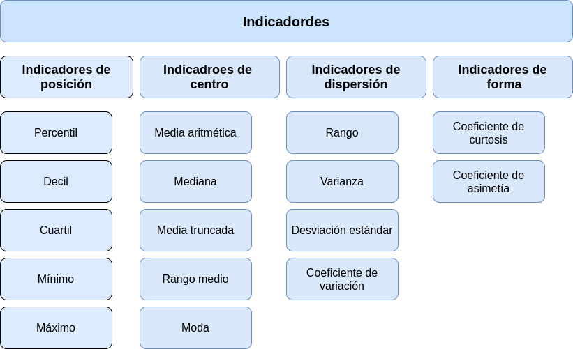

PRESENTACIÓN
El presente tutorial contiene preguntas relacionadas con los tipos de variables y sus esclas de medición, conceptos importantes en la elección de indicadores y representación gráfica de variables
CONCEPTOS
TIPOS DE VARIABLES
VARIABLE CUALITATIVA :
Se clasifican como variables cualitativas aquellas que toman valores no numéricos que pueden corresponde a factores o niveles de una variable aleatoria
VARIABLE CUANTITATIVA :
Son valores numéricos que pueden estar relacionados con mediciones y conteo de eventos. En otros casos son utilizadas de manera temporal para cuantificar variables no observables directamente y que se valoran a traves de test o cuestionarios con preguntas de opción multiple que puntuan de manera sumativa como son los casos del clima laboral, estres entre otros. Este proceso se denomina operacionalización de una variable cualitativa como cuantitativa.
ESCALAS DE MEDICIÓN
ESCALA NOMINAL :
Corresponde a valores no numéricos sin presencia de orden entre ellos. Los posibles operaciones al comparar dos valores son : \(=\), \(\neq\).
ESCALA ORDINAL :
Corresponde a valores no numéricos con presencia de orden entre ellos. Podemos compararlos mediante los operadores : \(=\), \(\neq\), \(<\), \(>\).
ESCALA DE INTERVALO :
Este tipo de escala se aplica a variables numéricas que pueden tener diferentes esclas de medición como por ejemplo la temperatura que se mide en grados Celsius, Kelvin o Fahrengeit . Esta escala permite los operadores de comparación : \(=\), \(\neq\), \(<\), \(>\), \(-\).
ESCALA DE RAZÓN :
Corresponde a variables numéricas para los cuales tiene sentido a demás de los operadores anteriores, la razón de dos de sus valores : \(=\), \(\neq\), \(<\), \(>\), \(-\), \(/\).
MAPA CONCEPTUAL

CUESTIONARIO
PREGUNTA 1
PREGUNTA 2
PREGUNTA 3
PREGUNTA 4
PREGUNTA 5
PREGUNTA 6
PREGUNTA 7
PREGUNTA 8
PREGUNTA 9